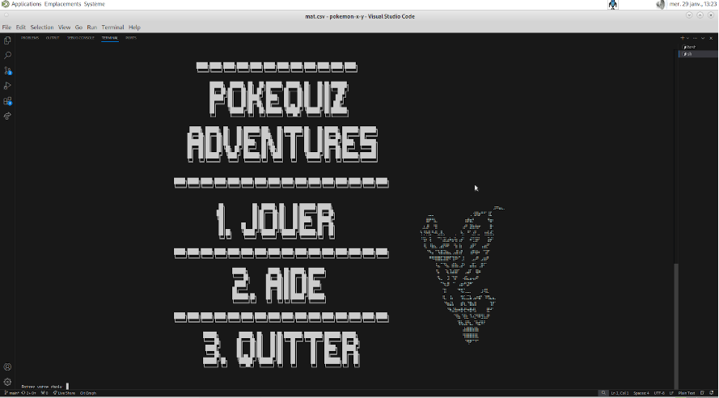
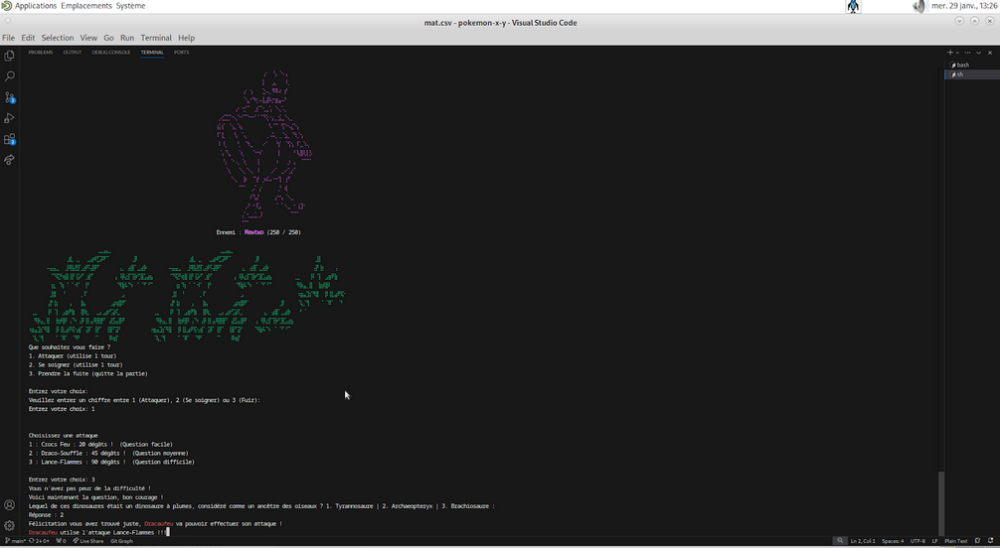
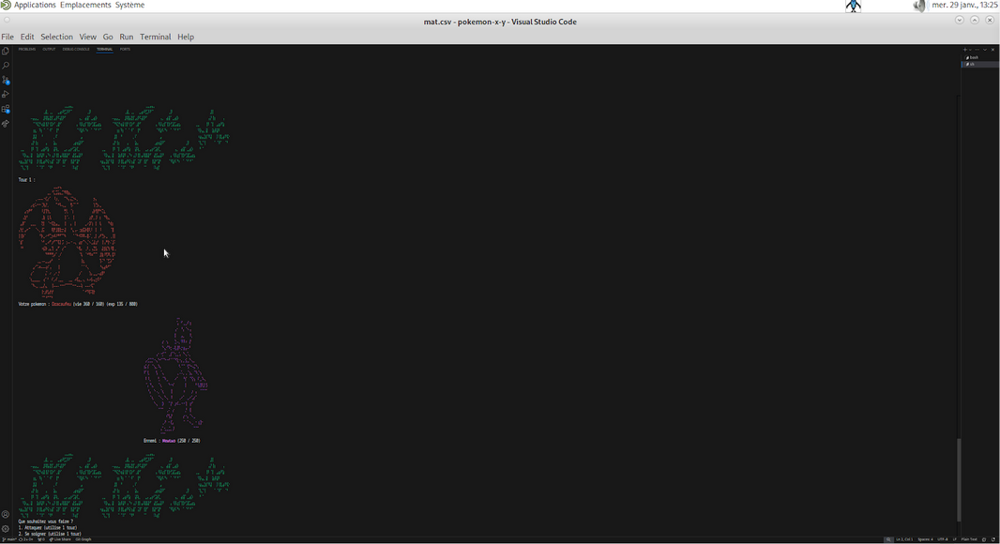

PokéQuiz Adventures - Jeux ludopédagogique
Création
Décembre - Janvier 2024-25
Équipe
M.Desprez M.Ung
Language
Java 17, JavaFX, CSS
Description du Projet
PokéQuiz Adventures est un jeu en terminal mêlant quizz et aventure. Le joueur incarne un dresseur et son Pokémon, affrontant ennemis et obstacles à travers des questions de culture générale. Chaque réponse influence le jeu (soins, dégâts, etc.).
Le projet a mobilisé nos compétences en IJava, organisation de code, gestion de fichiers, tests et réflexion algorithmique. Nous avons également mis en pratique notre créativité pour concevoir l’univers du jeu et optimiser son affichage en console.
L'objectif était de produire un jeu complet, fonctionnel, modulable et inspiré d’une célèbre franchise tout en ajoutant des mécanismes originaux.
Galerie d'images


